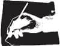

Yavaş, yavan bir gün daha. Zaman geçmek bilmiyor. Saat 12.30'a dek çamaşırhanede çalış. Yemek niyetine bulamaç kaşıkla. Öğleden sonra kitap oku, avluda volta at, Zişan'ın zırvalarını dinle. Saat beşte akşam sayımı. Yarım saat sonra Memur Andrew beliriyor kapıda.
"Yakında bir ziyaretçin olacak" diyor.
"Kimmiş o?"
"Gelince görürsün."
Teknik olarak bir mahkûmun bir ziyaretçiyi reddetme hakkı var ama belli ki Memur Andrew kuralları uygulamak zorunda hissetmiyor kendini. Bana sataşmak için fırsat kolluyor zaten. Esma dışında en son ne zaman bir ziyaretçim olduğunu hatırlamıyorum bile. Bu sene o da gelmez oldu ya. Beni esas şaşırtan Andrew hıyarının onay vermiş olması. Geçmiş performansıma dayanarak hemen reddedebilirdi halbuki. Akşamın geri kalanını arpacı kumrusu gibi düşünerek geçiriyorum. Sonunda dank ediyor kafama. Beni görmeye gelen her kimse, dengemi sarsacağını biliyor olmalı. Kimsenin kolay kolay aşamadığı koruyucu bir kabuğum var ama beni altüst edebilecek insanlar yok değil. Yalnızca birkaç kişiler. Onlar, tıpkı bir hayaletin duvarlardan geçtiği gibi kalkanımı delip geçebilirler.
"Endişelisin" diyor Zişan.
Soru mu, tespit mi? Her ne ise inkâr etmiyorum. "Öyle, ziyaretime kimin geleceğini bilmemek geriyor beni."
"Yarın ne getirir hiç bilmeyiz ama her yeni güne umutla başlarız."
Bu saçmalıkları dinleyecek havada değilim. Ranzama uzanıp kendimi dış dünyaya kapatıyorum. Feci bir gün daha beni bekliyor. Hayatım boyunca çoğunu atlattım bunların. Ama bir tanesi var ki, aralarında en beteri oydu: Ertesi gün.
Korkunç bir suç işledikten sonraki günün sabahı dipsiz bir karanlıktan uyanır insan. Beyninin bir yerlerinde alarm çalar, kırmızı bir ışık yanıp söner. Görmezden gelmeye çalışırsın. Hani her şeyin bir rüya, bir kâbus olma ihtimali vardır, ufacık da olsa. Düşerken ilk gördüğü ipe tutunan bir adam gibi sarılırsın o ihtimale. Bir dakika geçer. Belki bir saat. Zamanı ölçemez, gerçek dünyaya dönemezsin. Ta ki hakikat bütün ağırlığıyla kendini gösterene kadar. İp tutamaz seni, düşüverirsin.
Lavanta Sokağı'ndaydım, elimde bıçak. Çığlıkları duyuyordum. Tiz, keskin. Feryat ediyordu birisi. Gariptir, annemin sesini andırıyordu. Ama o olamazdı çünkü yerde yatıyordu, kanlar içinde. Sesi zihnimde yankılanıyordu. Sol elime baktım. Daha güçlü olan elime. Pelteleşmişti birden, başkasına aitmiş de bedenime geçici olarak iliştirilmiş gibi duruyordu. Elimden gelse fırlatıp atardım sol elimi.
Koşmaya başladım. Ceketim kan içindeydi. Nasıl oldu da kimse beni durdurmaya kalkışmadı bilmiyorum. Dar sokaklardan, arka bahçelerden geçtim nereye gittiğimi bilmeden. Caddeler kat etmiş, yayalara toslamış olmalıyım. Hayal meyal anımsıyorum. Sonraki yarım saat bulanık. Bir telefon kulübesi bulduğumu biliyorum ama.
Tarık Amca'yı aradım. Yaptığım haltı itiraf ettim. Sıkıntılı bir sessizlik oldu. Beni duymadığını sandım. Tekrarladım. Anneme hak ettiği cezayı verdiğimi söyledim. Bir daha asla böyle bir namussuzluk yapamazdı. Yarasının ağır olmadığını ama iyileşmesinin zaman alacağını anlattım. Göğsünün sağ yanından bir kez bıçakladım, dedim. Bu ona işlediği günahın vahametini anlatmaya yeterdi. İyileşirken hatasını düşünüp nedamet getirirdi. Bu arada görüştüğü herif korkudan tabanları yağlardı. Bundan sonra yanımıza yaklaşamazdı. Ailemizin şerefi temizlenmişti.
"Ne yaptın oğlum?" dedi amcam. Sesi boğulur gibi çıktı. "Felaket bu."
Şaşırdım. Kekelemeye başladım. "Aa...ma... b...biiz... ko...ko...konuş...muşş...tuk."
"Yanlışın var" dedi amcam. "Benimle böyle bir şey konuşmadın."
Annemin bir adamla buluştuğunu bana anlatan, acilen bir şeyler yapmam gerektiğini söyleyen, beni dolduruşa getiren, aile namusu üzerine nutuklar atan adam o değildi sanki. Donup kalmıştım.
"İskender, oğlum, gidip teslim olmalısın. Polis bana sorarsa aynen sana bunu söylediğimi anlatacağım. Kanunlara riayet eden bir vatandaşım ben."
Birden kuşku düştü içime. Tarık Amca bu anın provasını yapmıştı sanki. Bekliyordu. Lafları hazırdı. Telefonda bana ne diyeceği, polise ne anlatacağı, mahkemede tanıklığına gerek olursa ne açıklayacağı... Hepsine idmanlıydı. Kendimi maşa gibi hissettim. Beni kullanmıştı.
"Orada mısın oğlum? Yerini söyle bana."
Telefonu kapattım. Ceketimi çıkarıp bir çöp kutusuna attım. Sonra Kate'in evine gittim. Onunla birçok kez kapıya kadar yürümüş ama hiç içeri girmemiştim. Zili çaldım. Neyse ki kapıyı Kate açtı.
"Alex, bu ne sürpriz!" dedi. Yüzü kocaman bir gülümsemeyle aydınlandı. "Ah tatlım, geleceğini biliyordum."
Beni içeri davet etti. Bebeğimizi beraber büyütmek için onlarla yaşamayı kabul ettiğime ne kadar sevindiğini söyledi. Bana sarıldığında, karnı yuvarlak ve sertti. Beş aylık hamile gibi görünmedi gözüme. Top yutmuş gibi duruyordu.
Banyoyu göstermesini istedim. Ellerimi yıkadım. Aynadaki yüzüm diğer günlerde gördüğümden farksızdı. Oysa gözlerimde sıra dışı bir şeyler olacağını sanmıştım. Yoktu. Ellerimi bir daha yıkadım, ovalayarak. Gül kokuluydu sabun. Dolabı açıp çamaşır suyu şişesini buldum. Dişleri bembeyaz, saçları yapılı bir ev kadınının fotoğrafı vardı şişenin üstünde. Çamaşır suyunu ellerime döktüm. Avuçlarımdaki kesikler beter sızladı, canım yandı. Ovalamaya devam ettim. Tırnaklarımın altında bir şey vardı. Kir? Boya? Kan? Bir türlü temizlenmiyordu.
Az sonra Kate her şeyin yolunda olup olmadığına bakmak için içeri girdi. Bana sarıldı, aynada ikimizi inceledi. Tebessümle baktı bu çifte. Çamaşır suyunun üstündeki kadınınkine benzer bir gururla. Bir zafer edasıyla.
Suyu kapattı. "Yeter artık yıkadığın. Yeterince temizsin aşkım."
Oturma odasına gittik. Kate'in annesi pencerenin yanındaki koltuğa oturmuş bekliyordu. Üzerinde bir elbise vardı. Televizyondakiler gibi. Fıstık yeşili. Göğüsleri belli oluyordu. Çillerle kaplıydı gerdanı. Saçları yeni taranmıştı. Dudakları cart kırmızı boyalıydı. Yüzüne odaklanmaya gayret ettim. Başından aşağısına bakmamaya çalıştım. Porselen fincanda çay ikram etti. Ve meyveli kek. Sessizce yedik. Duvarda çerçeveli fotoğraflar vardı. Düzinelerce. Her hareketimi izliyordu. Tırnaklarımın altını kontrol ediyor gibi geldi bana. Ellerimi sakladım.
"Kate'çiğim bebek kız olursa adını Maggie, erkek olursa Tom koyacağınızı söylüyor."
Kate'e döndüm. Böyle bir karar almamıştık. Gözlerini kaçırdı benden.
"Evet, olabilir" dedim.
Sorumluluk sahibi bir baba olacağıma inanıp inanmadığımı sordu. "Bilmiyorum" dedim, "elimden geleni yaparım."
"Bazen elinden geleni yapmak yetmez ama" dedi.
Belki de televizyondan duymuştu bu lafı. Ya da bir zamanlar birileri ona söylemişti. Kendi ayaklarımız üstünde durana dek bize yardım edeceğini anlattı – geçici bir düzenlemeydi. Bunu bebek için yapacaktı. İlk torunu.
Gece Kate, ayrı odalarda kalmamız gerektiğini söyledi. Oturma odasındaki kanepede yatacaktım. Şimdilik. Yakında evlenecektik ve aynı yatağı paylaşacaktık nasıl olsa. Öyle dedi ve ekledi: "Sonsuza dek."
Temiz çarşaf ve yastık kılıfı getirdi. Yavaşça yukarı çekti kazağını. Memeleri şişmiş, uçlarındaki halkalar koyulaşmıştı. Damarları görünüyordu – mavi, iri, pörtlek. Kulağımı karnına yaslamamı istedi. Bir süre hiçbir şey duymadım. Sonra bir hareket hissettim, birisi gerinerek derin uykudan uyanıyordu. Bebek tekmelemeye başladı. Bir, iki, dört kez. Annem bana hamileyken karnını babama dinletmiş miydi, merak ettim. Annem... Ne haldeydi şimdi? Hastanede miydi?
Kate'i itip uzaklaştırdım kendimden. "Üzgünüm, uyumam gerek" dedim.
"Elbette, sevgilim."
Yalnız kalınca etrafa bakındım. Dantelli perdeler, çiçek desenli minderler, duvar kâğıtları, şöminenin üstündeki süslü vazo, guguklu saat. Uyuyamayacağımı sandım ama başım yastığa değer değmez dalmışım. Sabaha karşı sıçrayarak uyandım. Kate yanı başımda dikiliyordu. Yüzü kireç gibi, gözleri fal taşı misali açılmıştı.
"Alex" dedi. "Kapıda iki polis var."
Ayağa kalkıp başını avuçlarım arasına aldım. Öptüm onu. Tuzluydu ağzı. Paniğin tadı. "Seni soruyorlar sevgilim" dedi.
Koridora çıktım. Kate'in annesi geceliğiyle dikiliyordu. Yüzünde bir batman kremle. Altdudağı titriyordu. Bulaşıcı bir hastalığım varmış gibi kızını tutup kendine çekti. Arkada bir polis arabasının ışıklarını gördüm. Beni görmemişlerdi henüz. Onlara giyindiğimi söylemesini istedim Kate'ten.
Kaçma fikri aniden geldi. Düşünmeden, planlamadan. Mutfağa gidip kapıyı açtım, bahçeye sıvıştım; komşunun bahçesine atladım, oradan bir sonrakine. Kate polislerle konuşurken ben yan sokağa geçmiştim bile.
* * *
1978 senesi, Kasım'ın son günü. Tam fikrimi değiştirecektim ki köşeyi döndüğünü gördüm. Alışverişten geliyordu, elleri doluydu. Acele etmeden, ağır aheste yürüyordu. Kanım tepeme sıçradı. Ben ona evden çıkmayı yasak etmiştim. Ama belli ki talimatlarımı umursamıyordu.
Adımlarını yavaşlatıp bir sokak müzisyenini dinledi, sırtı bana dönük. Profiline baktım. Gülümsüyordu. Bir öfke dalgası kabardı içimde. Ben ona sokağa çıkma dememiş miydim? Bacaklarını ortada bırakan, dizinin üstünde elbiseler giymesini yasaklamamış mıydım? Kurallarımı hiçe sayıyor, düpedüz alay ediyordu benimle.
Takip etmeye başladım. Vitrinlere baktı, eve varmak için acele etmiyordu. Belki o adamla buluşmak için oyalanıyordur diye düşündüm ama öyle bir şey olmadı. Bizim sokağa yaklaşırken tökezleyip çantasını düşürdü. Daha önce hiç görmediğim haki renkli eski püskü bir çantaydı. Yerden alırken beni fark etti.
"İskender..." diye fısıldadı ismim bir sırmış gibi.
İskender Toprak
Shrewsbury Hapishanesi, 1991